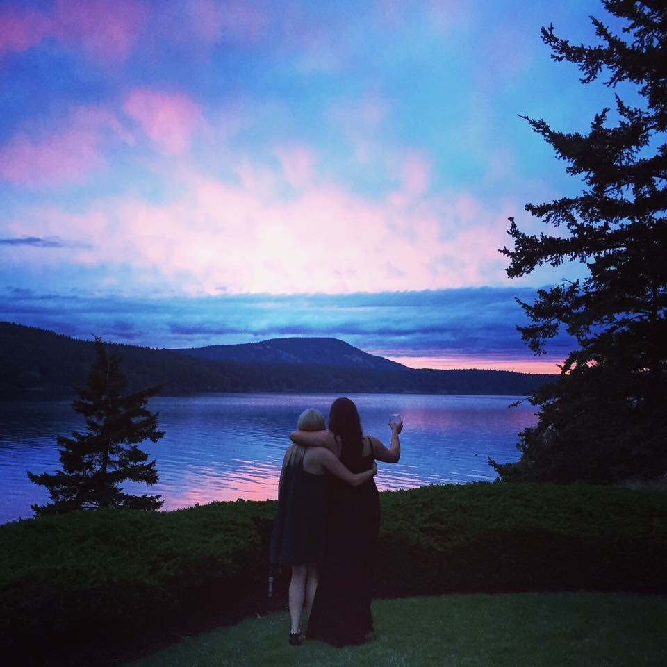

Erica
Maid of Honor
BIO
Our memories together go all the way back to when we were five years old. My family and I had just moved to Washington from California and I hated the move and adjustment it created. I remember our doorbell ringing and the little neighbor girl, Erica, at our front door. She asked me if I wanted to come play Barbies with her and the rest was history. Erica has become my closest friend of 23 years and is my sister and family. Most of my life memories include you in them. From learning how to play T-ball together, making up songs about mashed potatoes, to being college roommates. You are someone I can always count on until we are old and gray looking back at all of your lifelong memories. I could not be more excited to have you standing next to me on my wedding day and call you my maid of honor.
